Cosa vedere a Castel Gandolfo.
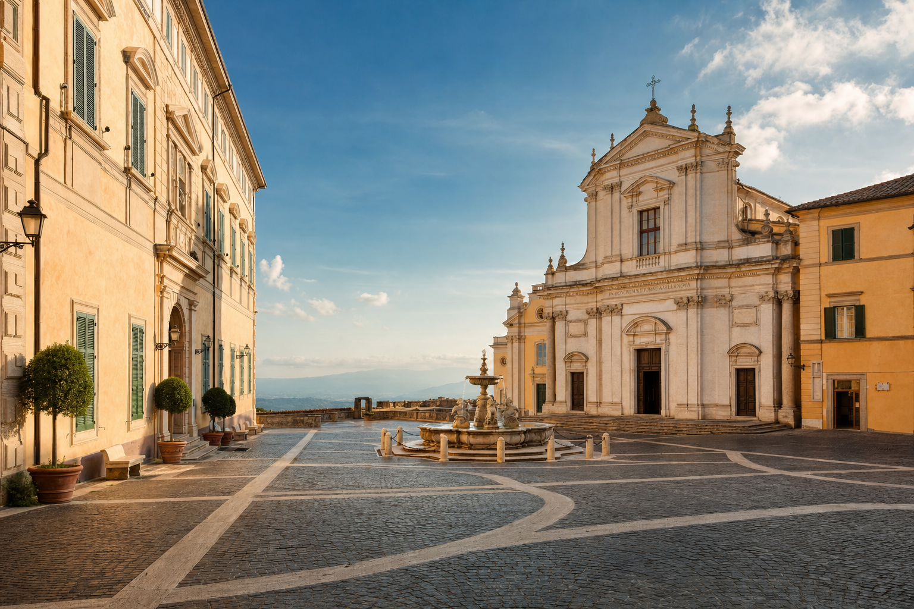
Castel Gandolfo concentra in poche centinaia di metri quattrocento anni di arte pontificia, due millenni di archeologia romana e un panorama unico sul cratere del Lago Albano. Ecco le dieci tappe fondamentali, tutte percorribili a piedi in una giornata, con orari e tariffe verificate per la stagione 2026.
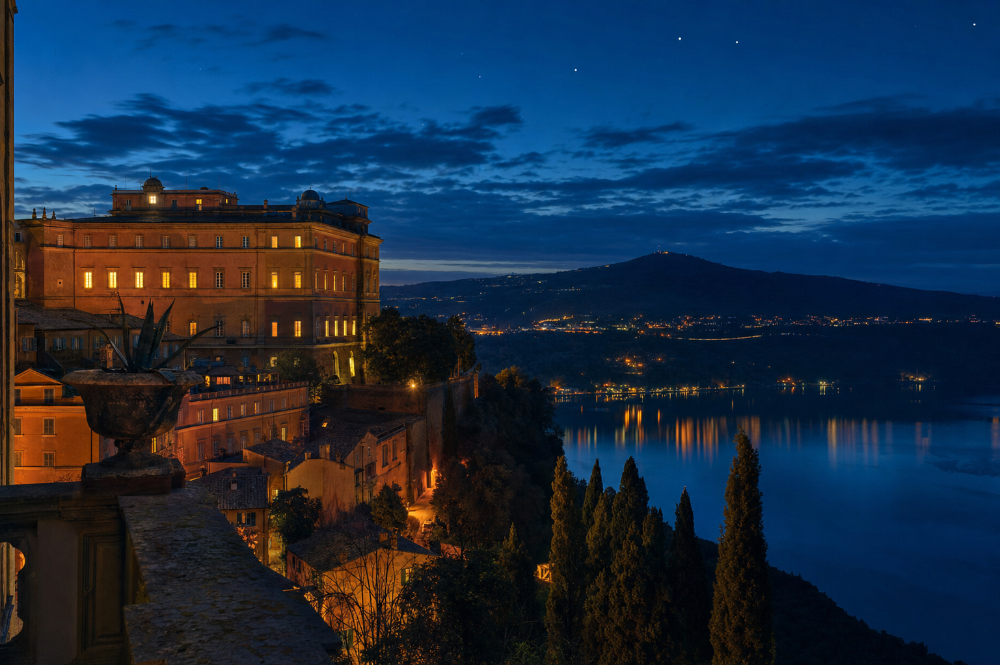
Palazzo Apostolico di Castel Gandolfo.
Residenza estiva dei Papi dal 1626, dal 2016 aperta al pubblico come museo. Il visitatore percorre gli appartamenti pontifici, la biblioteca, la sala del trono e la cappella privata, arredati come vennero lasciati dai Papi che li abitarono.
Biglietto d'ingresso €11,00 intero, con audioguida. Combinato Palazzo + Giardino di Villa Barberini + Antiquarium €26,00 intero. Gruppi organizzati €450 (Palazzo) e €650 (combinato).
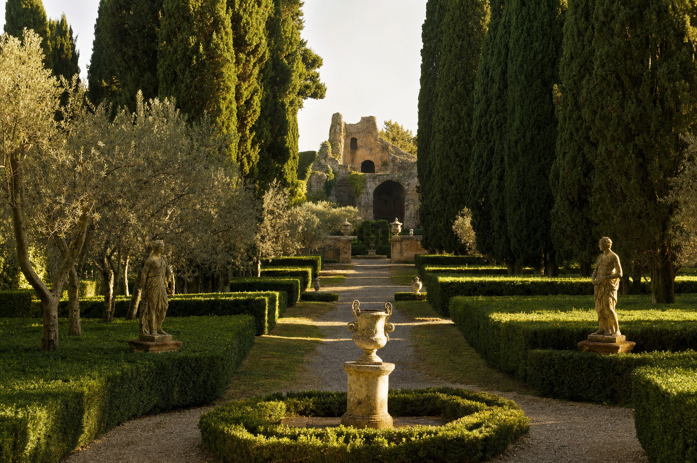
Villa Barberini, giardini pontifici.
Cinquantacinque ettari di verde extraterritoriale, con cipressi centenari, il ninfeo Bergantino, statue romane e i resti della villa dell'imperatore Domiziano. Dal 2023 riorganizzati nel Borgo Laudato Si', il percorso di ecologia integrale voluto da Francesco.
Visita in trenino ecologico (durata circa un'ora) o a piedi con guida. Biglietto Giardino + Antiquarium €26,00 intero, €15,00 ridotto. Il «treno del sabato» da Roma San Pietro €20,00, ridotto €14,00.
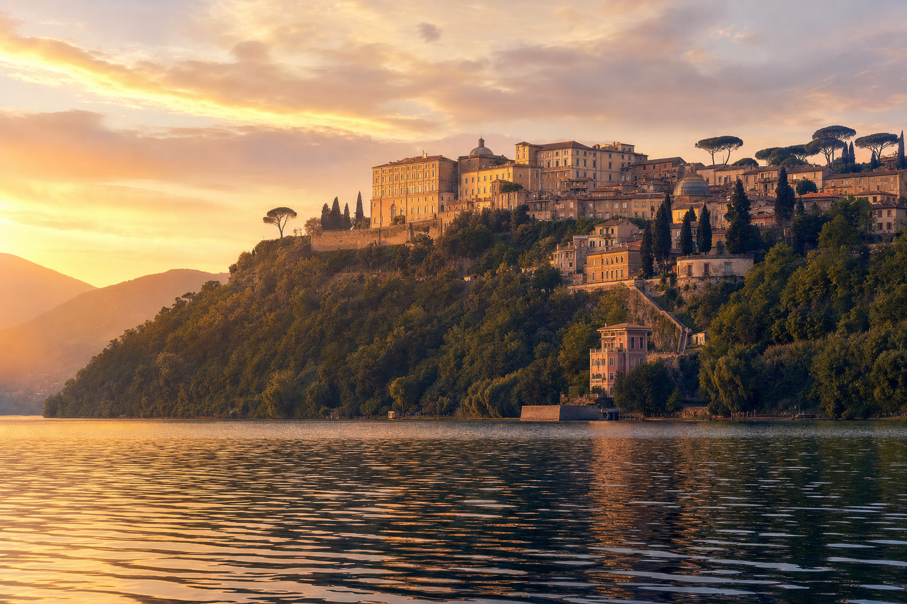
Piazza della Libertà & il Bernini.
Il cuore di Castel Gandolfo, disegnato dal Bernini: da un lato il Palazzo Apostolico, dall'altro la Collegiata di San Tommaso da Villanova (progettata dallo stesso Bernini nel 1660), al centro la fontana barocca. È qui che il Papa recita l'Angelus estivo.
Nei giorni feriali la piazza è quieta, con caffè storici e botteghe; nei giorni papali si riempie di fedeli. Da non perdere il belvedere alle spalle della piazza, che si apre sul cratere del lago.
Tra archeologia, arte e panorami.
Dalla Specola Vaticana ai resti della villa di Domiziano, dal ninfeo Dorico all'emissario romano del lago: il borgo custodisce tesori spesso trascurati dai tour classici.
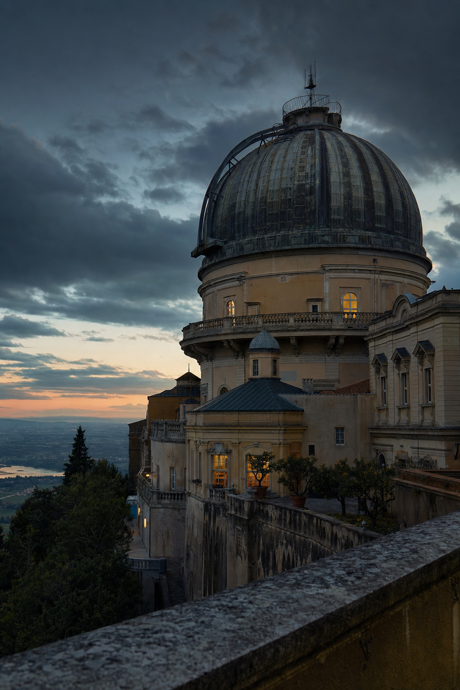
Specola Vaticana
L'osservatorio astronomico pontificio con quattro telescopi storici. Visite su prenotazione.
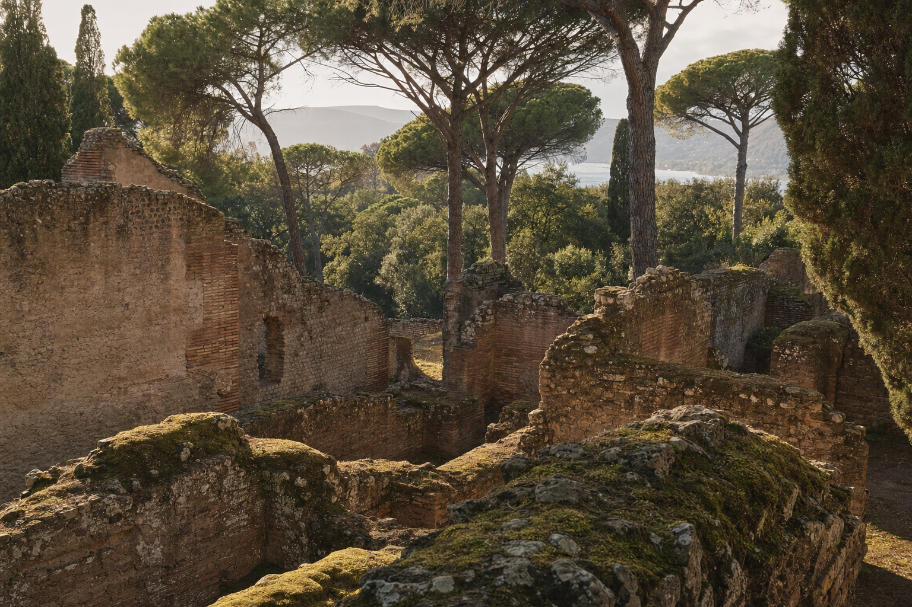
Antiquarium delle Ville Pontificie
Sculture, mosaici e reperti dalla villa di Domiziano su cui sorgono i giardini papali.
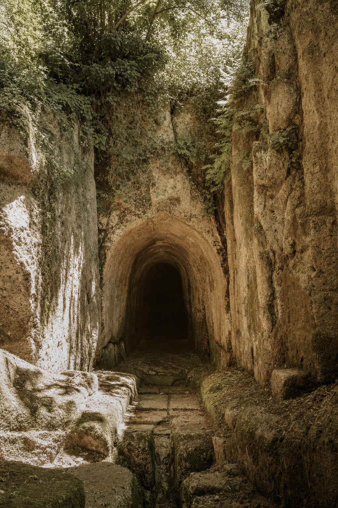
Emissario del Lago Albano
Galleria artificiale scavata dai Romani nel 398 a.C., ancora funzionante dopo 2.400 anni.
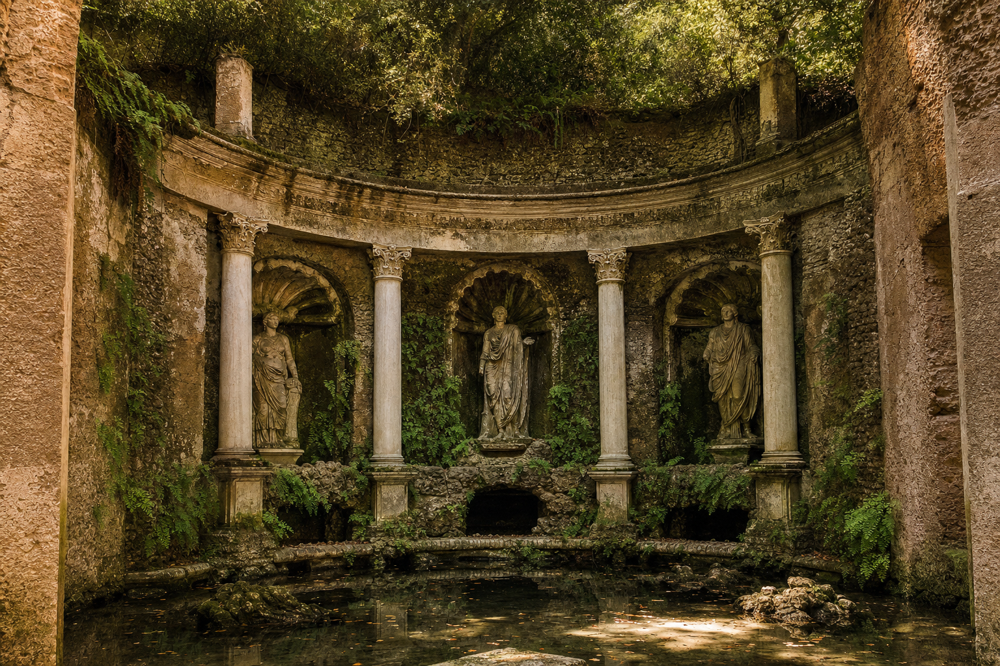
Ninfeo Dorico & Bergantino
Due grotte-santuario della villa imperiale, nascoste tra la vegetazione dei giardini.
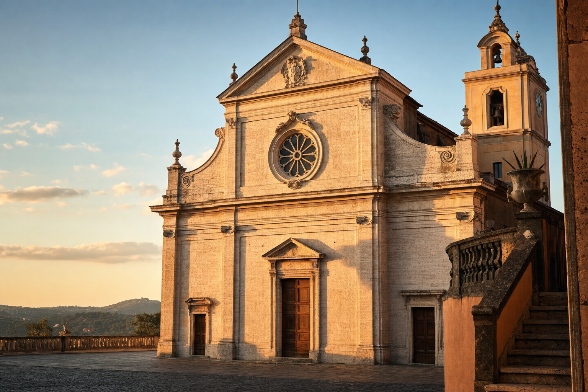
Collegiata San Tommaso da Villanova
Chiesa parrocchiale progettata dal Bernini nel 1660, con affreschi di Pietro da Cortona.
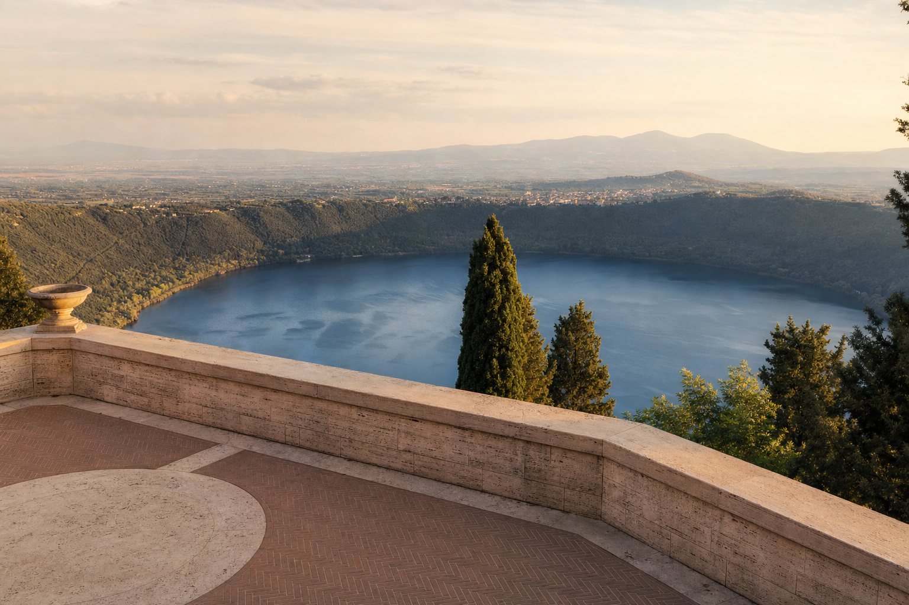
Belvedere del Cratere
Il balcone naturale sul Lago Albano, con vista fino a Monte Cavo e al Mediterraneo.
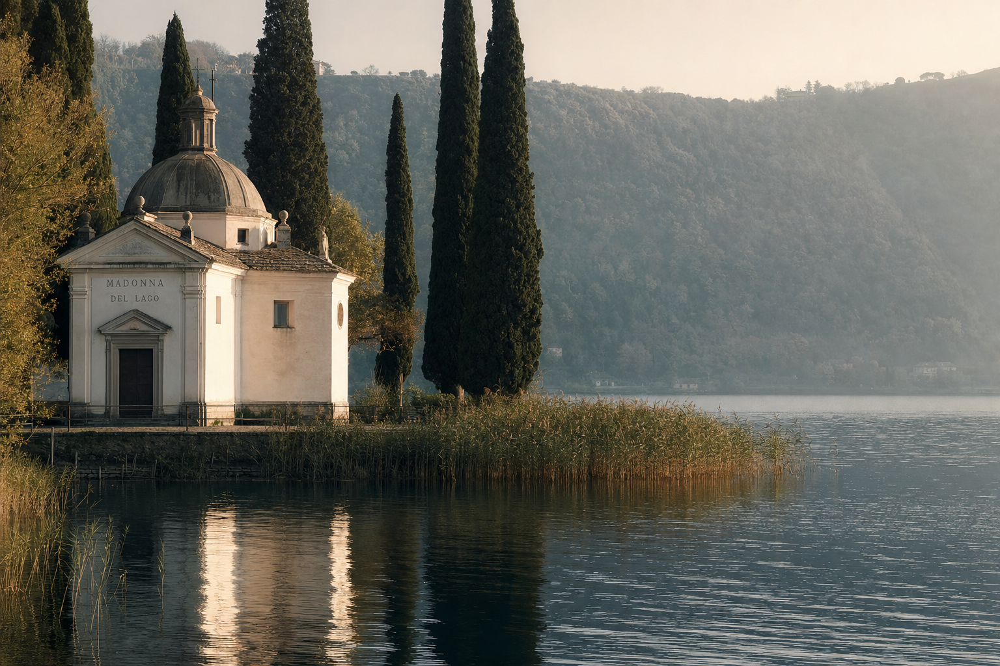
Chiesa della Madonna del Lago
Piccolo santuario sulle rive del lago, tra i più fotografati e amati dai locali.
Prima di partire.
Quanto costa entrare al Palazzo Apostolico?
Quanto tempo serve per visitare tutto?
Serve prenotare?
È accessibile ai disabili?
Ci sono giorni di chiusura?
Pronto per la visita?
Meno di 40 minuti di treno da Roma Termini. Il combinato biglietto + treno del sabato ti porta direttamente ai giardini pontifici.